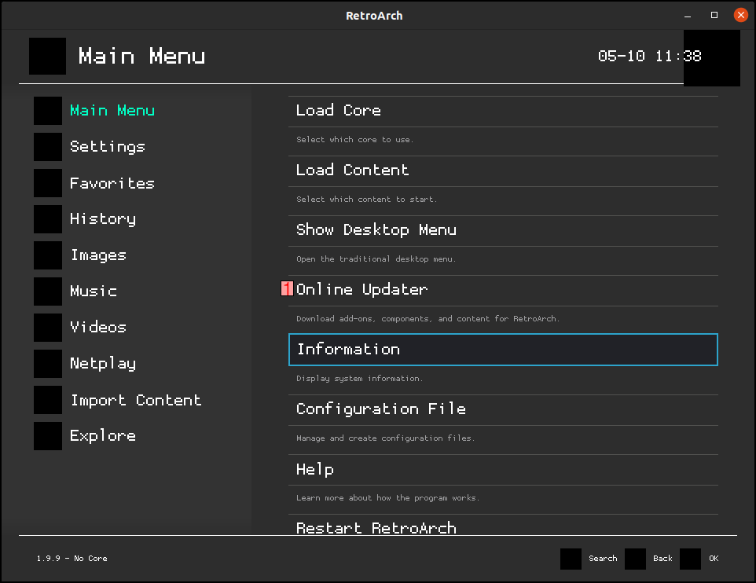

How to Set Up Retroarch Using Ubuntu
Retroarch is a fantastic way to enjoy the video games of your youth. Today, I’ll show you how to get it up and running on Ubuntu. And — if you’re comfortable using the terminal — setup should take less than sixty minutes.
While it’s entirely possible to emulate your old games without a unifying front-end, it tends to become increasingly cumbersome as your library grows. With some emulators relying on their own graphical interfaces (PCSX-Rearmed, for instance), and others expecting users to launch roms using the command line (such as the barebones Mednafen installation), opting for a consistent interface soon becomes a no-brainer.
What You’ll Need
Before we get started, you’ll need to prepare the following:
- A PC running Ubuntu Because Retroarch does such a fantastic job of supporting ageing systems, it’s hard to tell exactly how far back their Ubuntu support stretches. It’s probably a safe bet to assume that anything from 18.04 (which was released in 2018) onwards will run fine, but there’s a good chance significantly older versions could also work with enough tinkering.
- Some legally obtained roms or disc images You can find free, public-domain roms for a variety of systems online. A good place to start would be Zophar’s Domain. Alternatively, you could try producing your own ISO files using Ubuntu. This MakeTechEasier guide has a small section covering ISO file production using the dd command.
- Some legally obtained BIOS files You’ll possibly require a BIOS file for certain systems you’re wishing to emulate. Dumping one from an original system can be an involved process, but there are a number of guides available on the internet which will make your life a lot easier. If you're not sure, do some googling.
And that’s it! We can now get on with the actual installation process.
Installing Retroarch
There are actually a number of ways you can get Retroarch installed. The team provides packages in Flatpak, Appimage, and Snapcraft formats, as well as a version which is available via Steam.
In this guide, I’m going to stick with the method which has always worked best for me: installing via the official libretro repositories. The below command (taken from the Linux instructions page on the official Libretro website) will take care of adding the necessary repository, updating your package lists, and installing the software itself:
sudo add-apt-repository ppa:libretro/stable && sudo apt-get update && sudo apt-get install retroarchAlternatively, you can use the below – slightly amended – command to skip those pesky “Do you want to continue? [Y/N]” prompts:
sudo add-apt-repository ppa:libretro/stable && sudo apt-get update -y && sudo apt-get install retroarch -yConfiguring Retroarch
Once the whole process is complete, you can launch Retroarch from the terminal by typing "retroarch". Alternatively, find it in your system's default application launcher. You should then see something like the following:
Right now, all we have is a minimal installation, and we'll need to complete a few further steps before it can actually be used. From the Main Menu, click "Online Updater" (1). In Retroarch, you can select items using the d-pad and the “ok” button (this will be the B button on an XBox controller, or the circle button on a Playstation controller).
On the next screen, select the following options: "Update Core Info Files" (1), "Update Assets" (2), "Update Controller Profiles" (3), "Update Databases" (4), "Update Overlays" (5), and "Update GLSL Shaders" (6).
Optionally, you can also select "Update Cheats" if you’d like to have access to a library of cheats during gameplay. Likewise, you can set "On-Demand Thumbnail Downloads" to “On” if you’d like the system to attempt to automatically provide thumbnails for your games; however, this option can impact your system’s performance.
Let’s look at the items we just selected:
- Update Core Info Files According to the libretro team, this item is used for “displaying a pretty name in the Load Core screen and also for being able to select it from the filebrowser.”
- Update Assets The assets are mainly used for aesthetic purposes. Once they’re downloaded, you should see Retroarch immediately switch to a much more visually-pleasing theme.
- Update Controller Profiles If you intend to use any kind of gamepad, these configuration files should let you use whichever compatible devices you have without issue. I have a number of third-party Xbox 360 controllers which all work fine using these profiles.
- Update Databases By updating the databases, your system will be better-equipped to identify roms in your library.
- Update Overlays These decorations can be used when emulating older games to occupy the space caused by 16:9 resolutions. They can be used in combination with the shaders to produce some very nice presentations.
- Update GLSL Shaders Shaders are graphics filters used to render games in a specific style. Some of the most popular shaders allow you to render games with a faux-CRT effect, which can be especially useful for titles which were never meant to be played on such crisp displays (especially the 32-bit machines!). Do note, however, that shaders can be quite taxing on your graphics card.
Anyway, you should now see something that looks a bit more like this (my Retroarch installation uses the "Twilight Zone" colour scheme, by the way):
It’s time to begin downloading some emulators for your library. If you go to the following path:
Main Menu > Online Updater > Core DownloaderYou should now be presented with a list which looks something like this:
Note:If you’re having issues accessing the Core Downloader, you should ensure that it’s visible in the settings menu. You can check this by navigating to:
Settings > User Interface > Menu Item Visibility > Show ‘Core Downloader’It should be set to “ON”.
A great number of systems can be emulated using Retroarch, and many of them have more than one emulator (or “core”) available. You can install them by highlighting them and then pressing the “ok” button. If you’re feeling confused about which option to select for a particular system, my advice is to just download several and experiment with them to see which work best for you; by and large, most of them are very functional.
As far as recommendations, I’ve found the following cores to be extremely dependable:
- Playstation I tend to use the Beetle PSX HW core for 3D games, due to its ability to upscale games beautifully (please note that this requires a somewhat decent graphics card). Otherwise, I rely on PCSX-Rearmed.
- Dreamcast Flycast is a fork of the once-popular Reicast emulator. It offers fantastic compatibility, as well as the ability to support keyboards and mice (useful for Phantasy Star Online).
- Saturn The Beetle Saturn core can put a significant amount of stress on your system, but seems to be the most accurate. Otherwise, Yabause often works very well for me.
- Playstation Portable PPSSPP works a charm, and even supports upscaling as well (again, if you have good enough graphics hardware).
- Gamecube / Wii While the Dolphin core’s performance doesn’t match that of the standalone emulator, it can still work very well on a high-spec gaming PC.
While a few cores (such as Dolphin and PPSSPP) provide their own BIOS, others will require you to source a separate BIOS file. You can find information about which files are specifically required for each core by checking out the respective page on the libretro website.
Using the information from the above page on the libretro site, you can then copy and paste the appropriate files to the necessary directory. An easy way to do this from the terminal (once you’ve unzipped the BIOS file), is to navigate to the folder housing your BIOS and type the following:
cp *.bin ~/.config/retroarch/systemThis will copy all files with the extension “.bin” to the system folder in Retroarch (please note that certain emulators require the BIOS to be placed in a specific folder within the “system” directory. Again, this information can be found on each emulator’s designated page on the libretro site).
Preparing Your Library
Now that you’ve configured retroarch, it’s time to begin assembling your library. I’d recommend setting up a folder called “roms” and placing this in your home directory. To do this, we can just type the following in the terminal:
mkdir ~/romsI also tend to create sub-directories within my main rom folder to house games from each separate system. For example:
mkdir ~/roms/PSX # For Playstation games
mkdir ~/roms/DC # For Dreamcast games
mkdir ~/roms/Saturn # For Saturn games
Once that’s done, copy any legally-obtained roms for these systems into the respective folder.
One of the things that can feel slightly cumbersome in Retroarch is navigating to your rom folder every time you want to boot a game. An easy way to avoid having to do this is to set the rom folder as your start directory. You can arrange this by going to the following path:
Settings > Directory > File BrowserThen, navigate to the rom folder and select “<Use This Directory>”
Playing Your Games
That’s it! You’ve set up your emulators, prepared your library, and now you can get on with wasting the rest of your day playing your favourite retro games.
To launch any game, just select “Load Content” from the Main Menu. Once you select the desired rom file, you should be presented with a list of Suggested Cores. Select one which is appropriate for the system you're emulating, and the game should boot immediately.
Note:To switch Retroarch to full-screen mode, navigate to:
Settings > Video > Fullscreen mode > Start in Fullscreen ModeAnd set it to “ON”.